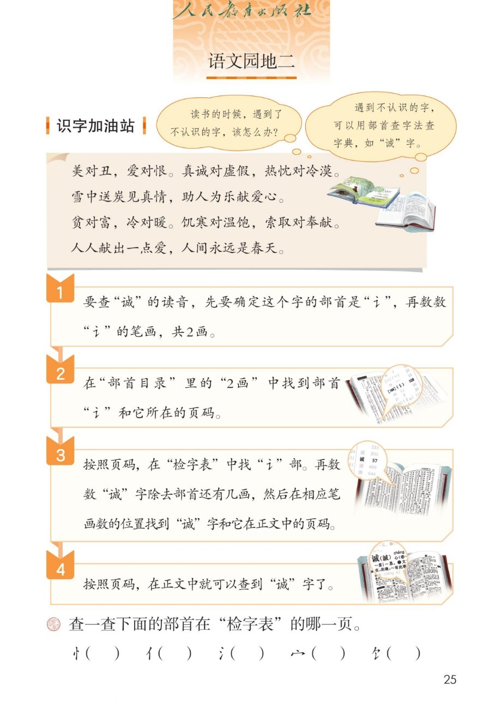
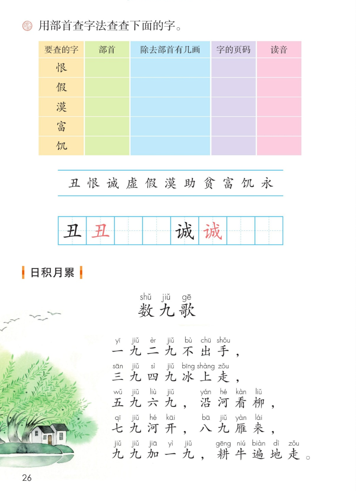
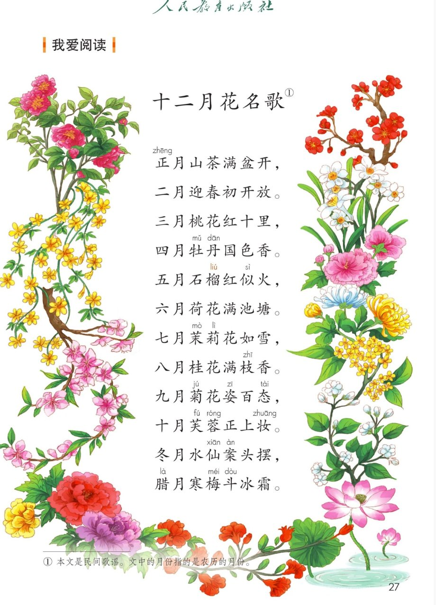

统编版 · 二年级上册 · 第二单元
第二单元 · 单元课件
语文园地二 · 对子歌识字 · 部首查字法 · 数九歌 · 十二月花名歌
课本第 25~27 页，点哪句读哪句
对子歌 1 首
部首查字法 4 步
会认 11 字
会写 2 字
民歌 2 首
闯关 8 题
这个单元学了什么：四首韵文带我们看场景、认树木、拍手唱、说农事。
语文园地二要教大家一个新本领——遇到不认识的字，用部首查字法查字典；
还要读对子歌记反义词，背数九歌，读十二月花名歌。点一下任一卡片或句子，就能听。
① 识字加油站 · 对子歌
课本第 25 页
点哪句读哪句，红色的拼音是本页要认的字
美对丑，爱对恨。诚实对虚假，热忱对冷漠。
雪中送炭见真情，助人为乐献爱心。
贫对富，冷对暖。饥寒对温饱，索取对奉献。
人人献出一点爱，人间永远是春天。
对子歌怎么读：两句一对，一正一反。美——丑，爱——恨，贫——富……
像唱歌一样一问一答，反义词就记住了。下面这些对子，点一张听一张。
② 部首查字法 · 四步查到“诚”
课本第 25 页
点卡片听步骤
读书的时候，遇到了不认识的字，该怎么办？——遇到不认识的字，可以用部首查字法查字典。
比如这个“诚”字，跟着下面四步，就能在字典里找到它。
1
定部首 · 数笔画
要查“诚”的读音，先要确定这个字的部首是“讠”，再数数“讠”的笔画，共2画。
2
翻部首目录
在“部首目录”里的“2画”中找到部首“讠”和它所在的页码。
3
检字表里找
按照页码，在“检字表”中找“讠”部。再数数“诚”字除去部首还有几画，然后在相应笔画数的位置找到“诚”字和它在正文中的页码。
4
按页码查正文
按照页码，在正文中就可以查到“诚”字了。
查字典小口诀（老师的话）：定部首，数几画，部首目录找页码，检字表里再数画，正文页码查到它。
③ 查一查 · 填一填
课本第 25~26 页
先自己想，再点卡片和表格行对答案
查一查：下面的部首在“检字表”的哪一页？页码在不同版本的字典里不一样，
请翻开自己的字典找一找。先记住每个部首有几画——点卡片揭晓答案。
用部首查字法查查下面的字。把课本第 26 页的表格填完整：先找部首，再数除去部首有几画，
最后按页码到正文里查读音。点表格里的行，揭晓参考答案。
| 要查的字 | 部首 | 除去部首有几画 | 读音 |
|---|
| 恨 | 点行揭晓 | ？画 | ？ |
忄 | 6 画 | hèn |
| 假 | 点行揭晓 | ？画 | ？ |
亻 | 9 画 | jiǎ |
| 漠 | 点行揭晓 | ？画 | ？ |
氵 | 10 画 | mò |
| 富 | 点行揭晓 | ？画 | ？ |
宀 | 9 画 | fù |
| 饥 | 点行揭晓 | ？画 | ？ |
饣 | 2 画 | jī |
本页要认的字 · 11 个
都藏在课本第 26 页的生字条里，点字听读音
④ 写字 · 丑 诚
课本第 26 页 · 田字格
点卡片听书写要点
⑤ 日积月累 · 数九歌
课本第 26 页
点哪句读哪句
数 九 歌
一九二九不出手，
三九四九冰上走，
五九六九，沿河看柳，
七九河开，八九雁来，
九九加一九，耕牛遍地走。
小知识（老师的话）：从冬至那天起，每九天算一个“九”。天气一天天变冷，
又一天天变暖——数完九个“九”，寒冬过去，春天就来了，耕牛又要下地了。
⑥ 我爱阅读 · 十二月花名歌
课本第 27 页
点哪句读哪句，读完认一认十二种花
月份 · 花名 配对
点卡片听那一月的歌句
课本注释：① 本文是民间歌谣。文中的月份指的是农历的月份。
⑦ 单元闯关 · 8 题
点选项就判对错，答完自动算分
已经答 0 题，答对 0 题。
课本原页 · 第 25~27 页点图放大

第 25 页 · 识字加油站 · 部首查字法四步

第 26 页 · 查字填表 · 日积月累 数九歌

第 27 页 · 我爱阅读 十二月花名歌